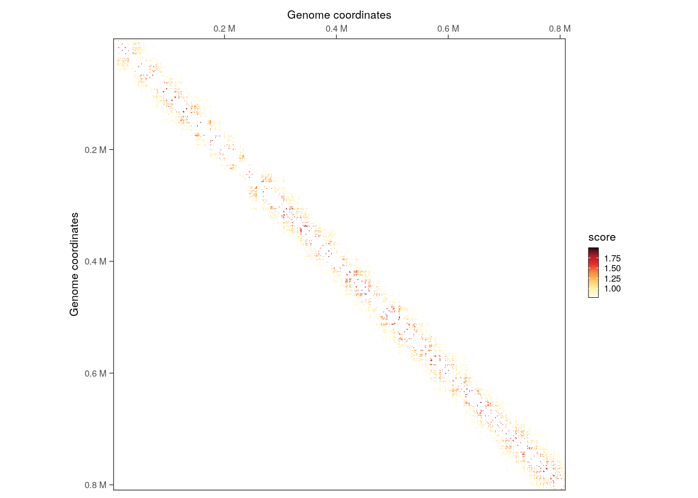
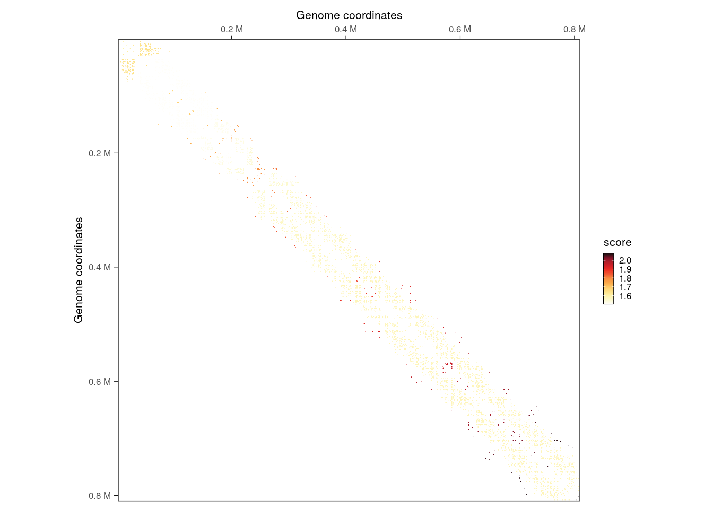
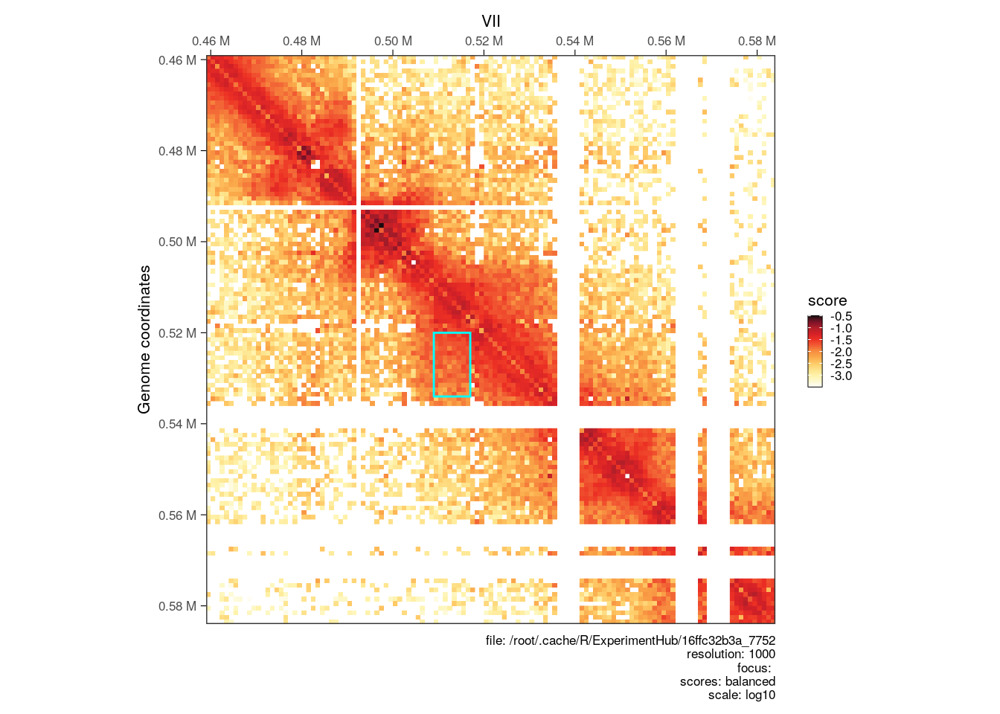

library(ggplot2)
library(purrr)
library(GenomicRanges)
## Loading required package: stats4
## Loading required package: BiocGenerics
##
## Attaching package: 'BiocGenerics'
## The following objects are masked from 'package:stats':
##
## IQR, mad, sd, var, xtabs
## The following objects are masked from 'package:base':
##
## Filter, Find, Map, Position, Reduce, anyDuplicated, aperm,
## append, as.data.frame, basename, cbind, colnames, dirname,
## do.call, duplicated, eval, evalq, get, grep, grepl, intersect,
## is.unsorted, lapply, mapply, match, mget, order, paste, pmax,
## pmax.int, pmin, pmin.int, rank, rbind, rownames, sapply,
## setdiff, table, tapply, union, unique, unsplit, which.max,
## which.min
## Loading required package: S4Vectors
##
## Attaching package: 'S4Vectors'
## The following object is masked from 'package:utils':
##
## findMatches
## The following objects are masked from 'package:base':
##
## I, expand.grid, unname
## Loading required package: IRanges
##
## Attaching package: 'IRanges'
## The following object is masked from 'package:purrr':
##
## reduce
## Loading required package: GenomeInfoDb
library(InteractionSet)
## Loading required package: SummarizedExperiment
## Loading required package: MatrixGenerics
## Loading required package: matrixStats
##
## Attaching package: 'MatrixGenerics'
## The following objects are masked from 'package:matrixStats':
##
## colAlls, colAnyNAs, colAnys, colAvgsPerRowSet, colCollapse,
## colCounts, colCummaxs, colCummins, colCumprods, colCumsums,
## colDiffs, colIQRDiffs, colIQRs, colLogSumExps, colMadDiffs,
## colMads, colMaxs, colMeans2, colMedians, colMins, colOrderStats,
## colProds, colQuantiles, colRanges, colRanks, colSdDiffs, colSds,
## colSums2, colTabulates, colVarDiffs, colVars, colWeightedMads,
## colWeightedMeans, colWeightedMedians, colWeightedSds,
## colWeightedVars, rowAlls, rowAnyNAs, rowAnys, rowAvgsPerColSet,
## rowCollapse, rowCounts, rowCummaxs, rowCummins, rowCumprods,
## rowCumsums, rowDiffs, rowIQRDiffs, rowIQRs, rowLogSumExps,
## rowMadDiffs, rowMads, rowMaxs, rowMeans2, rowMedians, rowMins,
## rowOrderStats, rowProds, rowQuantiles, rowRanges, rowRanks,
## rowSdDiffs, rowSds, rowSums2, rowTabulates, rowVarDiffs,
## rowVars, rowWeightedMads, rowWeightedMeans, rowWeightedMedians,
## rowWeightedSds, rowWeightedVars
## Loading required package: Biobase
## Welcome to Bioconductor
##
## Vignettes contain introductory material; view with
## 'browseVignettes()'. To cite Bioconductor, see
## 'citation("Biobase")', and for packages 'citation("pkgname")'.
##
## Attaching package: 'Biobase'
## The following object is masked from 'package:MatrixGenerics':
##
## rowMedians
## The following objects are masked from 'package:matrixStats':
##
## anyMissing, rowMedians
library(HiCExperiment)
## Consider using the `HiContacts` package to perform advanced genomic operations
## on `HiCExperiment` objects.
##
## Read "Orchestrating Hi-C analysis with Bioconductor" online book to learn more:
## https://js2264.github.io/OHCA/
##
## Attaching package: 'HiCExperiment'
## The following object is masked from 'package:SummarizedExperiment':
##
## metadata<-
## The following object is masked from 'package:S4Vectors':
##
## metadata<-
## The following object is masked from 'package:ggplot2':
##
## resolution
library(HiContactsData)
## Loading required package: ExperimentHub
## Loading required package: AnnotationHub
## Loading required package: BiocFileCache
## Loading required package: dbplyr
##
## Attaching package: 'AnnotationHub'
## The following object is masked from 'package:Biobase':
##
## cache
library(plyinteractions)
##
## Attaching package: 'plyinteractions'
## The following object is masked from 'package:matrixStats':
##
## count
## The following object is masked from 'package:IRanges':
##
## slice
## The following object is masked from 'package:S4Vectors':
##
## rename
## The following object is masked from 'package:ggplot2':
##
## annotate
## The following object is masked from 'package:stats':
##
## filter
library(multiHiCcompare)
##
## Attaching package: 'multiHiCcompare'
## The following object is masked from 'package:HiCExperiment':
##
## resolution
## The following object is masked from 'package:ggplot2':
##
## resolution
library(dplyr)
##
## Attaching package: 'dplyr'
## The following objects are masked from 'package:dbplyr':
##
## ident, sql
## The following object is masked from 'package:Biobase':
##
## combine
## The following object is masked from 'package:matrixStats':
##
## count
## The following objects are masked from 'package:GenomicRanges':
##
## intersect, setdiff, union
## The following object is masked from 'package:GenomeInfoDb':
##
## intersect
## The following objects are masked from 'package:IRanges':
##
## collapse, desc, intersect, setdiff, slice, union
## The following objects are masked from 'package:S4Vectors':
##
## first, intersect, rename, setdiff, setequal, union
## The following objects are masked from 'package:BiocGenerics':
##
## combine, intersect, setdiff, union
## The following objects are masked from 'package:stats':
##
## filter, lag
## The following objects are masked from 'package:base':
##
## intersect, setdiff, setequal, union
library(tidyr)
##
## Attaching package: 'tidyr'
## The following object is masked from 'package:S4Vectors':
##
## expand9 Interoperability: using HiCExperiment with other R packages
Pre-loading packages and objects 📦
Aims
This notebook illustrates how to use a range of popular Hi-C—related R packages with HiCExperiment objects. Conversion to the data structures supported by the following packages is illustrated here:
-
diffHic multiHiCcompareTopDom-
GOTHiC
9.1 diffHic
diffHic is the first R package dedicated to Hi-C processing and analysis (Lun & Smyth (2015)). It is packed with useful functions to generate a contact matrix from read pairs and to perform downstream investigation, including normalization, 2D “peak” (i.e. loops) finding and aggregation, differential interaction between samples, etc. It works seamlessly with the InteractionSet class of object, which can be easily obtained from a HiCExperiment object.
To do so, we first need to extract GInteractions from one or several HiCExperiment objects and create a single InteractionSet object.
library(InteractionSet)
library(GenomicRanges)
library(HiCExperiment)
library(HiContactsData)
# ---- This downloads an example `.mcool` file and caches it locally
coolf <- HiContactsData('yeast_wt', 'mcool')
## see ?HiContactsData and browseVignettes('HiContactsData') for documentation
## loading from cache
cool <- import(coolf, format = 'cool')
gi <- cool |>
interactions() |>
as("ReverseStrictGInteractions")
iset <- InteractionSet(
assays = list(
counts = matrix(gi$count, ncol = 1),
balanced = matrix(gi$balanced, ncol = 1)
),
interactions = gi,
colData = data.frame(lib = c("WT"), totals = sum(gi$count))
)From there, we can filter interactions to only retain those with significant enrichment over background.
library(diffHic)
set.seed(1234)
# --- Filter to find aggregated interactions
enrichments <- enrichedPairs(iset)
filter <- filterPeaks(enrichments, min.enrich = log2(1.2), min.diag = 5)
filtered_iset <- iset[filter]
filtered_iset
## class: InteractionSet
## dim: 41872 1
## metadata(0):
## assays(2): counts balanced
## rownames: NULL
## rowData names(4): bin_id1 bin_id2 count balanced
## colnames: NULL
## colData names(2): lib totals
## type: ReverseStrictGInteractions
## regions: 12079
# --- Visualize filtered interactions
library(plyinteractions)
library(HiContacts)
## Registered S3 methods overwritten by 'readr':
## method from
## as.data.frame.spec_tbl_df vroom
## as_tibble.spec_tbl_df vroom
## format.col_spec vroom
## print.col_spec vroom
## print.collector vroom
## print.date_names vroom
## print.locale vroom
## str.col_spec vroom
interactions(filtered_iset) |>
filter(seqnames2 == 'II', seqnames1 == seqnames2) |>
plotMatrix(use.scores = 'count')
Next, we can cluster filtered interactions that are next to each other.
# --- Cluster interactions to find loops
clustered_iset <- clusterPairs(filtered_iset, tol = 5000)
clustered_iset$interactions
## ReverseStrictGInteractions object with 1644 interactions and 0 metadata columns:
## seqnames1 ranges1 strand1 seqnames2 ranges2 strand2
## <Rle> <IRanges> <Rle> <Rle> <IRanges> <Rle>
## [1] I 15001-149000 * --- I 1-122000 *
## [2] I 133001-148000 * --- I 127001-139000 *
## [3] I 154001-160000 * --- I 128001-149000 *
## [4] I 168001-173000 * --- I 138001-148000 *
## [5] I 184001-196000 * --- I 15001-23000 *
## ... ... ... ... ... ... ... ...
## [1640] XVI 897001-898000 * --- XVI 831001-832000 *
## [1641] XVI 907001-910000 * --- XVI 840001-843000 *
## [1642] XVI 926001-934000 * --- XVI 872001-878000 *
## [1643] XVI 933001-934000 * --- XVI 858001-859000 *
## [1644] XVI 933001-942000 * --- XVI 928001-934000 *
## -------
## regions: 2822 ranges and 0 metadata columns
## seqinfo: 16 sequences from an unspecified genome
# --- Visualize clustered interactions
interactions(filtered_iset) |>
mutate(cluster = clustered_iset$indices[[1]]) |>
filter(seqnames2 == 'II', seqnames1 == seqnames2) |>
plotMatrix(use.scores = 'cluster')
Finally, we can visualize identified individual interaction clusters identified with diffHic using HiContacts.
# --- Plot matrix at a clustered loops
cgi <- clustered_iset$interactions[554]
seqn <- seqnames(anchors(cgi, type="second"))
start <- start(anchors(cgi, type="second")) - 50000
end <- end(anchors(cgi, type="first")) + 50000
interactions_peak <- GRanges(seqn, IRanges(start, end))
p <- plotMatrix(cool[interactions_peak])
library(ggplot2)
an <- anchors(cgi)
p + geom_rect(
data = data.frame(xmin = start(an[[2]]), xmax = end(an[[2]]), ymin = start(an[[1]]), ymax = end(an[[1]])),
aes(xmin = xmin, xmax = xmax, ymin = ymin, ymax = ymax),
inherit.aes = FALSE,
fill = NA,
colour = 'cyan'
)
9.2 multiHiCcompare
The multiHiCcompare package provides functions for joint normalization and difference detection in multiple Hi-C datasets (Stansfield et al. (2019)). According to its excerpt, to perform differential interaction analysis, it requires a list of raw counts for different samples/replicates, stored in data frames with four columns (chr, start1, start2, count).
Manipulate a HiCExperiment object to coerce it into such structure is straightforward.
library(dplyr)
library(tidyr)
library(purrr)
coolf_wt <- HiContactsData('yeast_wt', 'mcool')
## see ?HiContactsData and browseVignettes('HiContactsData') for documentation
## loading from cache
coolf_eco1 <- HiContactsData('yeast_eco1', 'mcool')
## see ?HiContactsData and browseVignettes('HiContactsData') for documentation
## loading from cache
hics <- list(
"wt" = import(coolf_wt, format = 'cool'),
"eco1" = import(coolf_eco1, format = 'cool')
)
hics_list <- map(hics, ~ .x['XI'] |>
as.data.frame() |>
mutate(chr = 1) |>
relocate(chr) |>
select(chr, start1, start2, count)
)
head(hics_list[[1]])
## chr start1 start2 count
## 1 1 1 1 2
## 2 1 1 1001 3
## 3 1 1 2001 3
## 4 1 1 3001 13
## 5 1 1 4001 9
## 6 1 1 5001 13Once this list is generated, the classical multiHiCcompare workflow can be applied: first run make_hicexp(), followed by cyclic_loess(), then hic_exactTest() and finally results():
DI <- hics_list |>
make_hicexp(
data_list = hics_list,
groups = factor(c(1, 2))
) |>
cyclic_loess() |>
hic_exactTest() |>
results()
DI
## chr region1 region2 D logFC logCPM p.value p.adj
## 1: 1 1 1001 1 0.4279414 6.382927 0.78960192 1.0000000
## 2: 1 1 3001 3 1.0325237 8.339327 0.06035705 0.9501367
## 3: 1 1 4001 4 0.6862141 7.597689 0.34723639 1.0000000
## 4: 1 1 5001 5 0.5124878 7.960339 0.43133791 1.0000000
## 5: 1 1 6001 6 -0.3568672 8.563374 0.52289982 1.0000000
## ---
## 22637: 1 663001 666001 3 -1.1680738 7.158551 0.17500113 1.0000000
## 22638: 1 664001 664001 0 1.4530501 8.536212 0.16535151 1.0000000
## 22639: 1 664001 665001 1 -0.1014769 8.166275 1.00000000 1.0000000
## 22640: 1 665001 665001 0 -0.3110054 10.013750 0.60075706 1.0000000
## 22641: 1 665001 666001 1 -0.4989794 7.750157 0.41481212 1.00000009.3 TopDom
The TopDom method is widely used to annotate topological domains in genomes from Hi-C data (Shin et al. (2015)). The TopDom package was created to implement this method in R (Bengtsson et al. (2020)).
Unfortunately, the format of the input to TopDom is rather tricky (see ?TopDom::readHiC). The following chunk of code shows how to coerce a HiCExperiment object into a TopDom-compatible object.
library(TopDom)
hic <- import(coolf_wt, format = 'cool')
HiCExperiment2TopDom <- function(hic, chr) {
data <- list()
cm <- as(hic[chr], 'ContactMatrix')
data$counts <- as.matrix(cm) |> base::as.matrix()
data$counts[is.na(data$counts)] <- 0
data$bins <- regions(cm) |>
as.data.frame() |>
select(seqnames, start, end) |>
mutate(seqnames = as.character(seqnames)) |>
mutate(id = 1:n(), start = start - 1) |>
relocate(id) |>
dplyr::rename(chr = seqnames, from.coord = start, to.coord = end)
class(data) <- 'TopDomData'
return(data)
}
hic_topdom <- HiCExperiment2TopDom(hic, "II")
hic_topdom
## TopDomData:
## bins:
## 'data.frame': 813 obs. of 4 variables:
## $ id : int 1 2 3 4 5 6 7 8 9 10 ...
## $ chr : chr "II" "II" "II" "II" ...
## $ from.coord: num 0 1000 2000 3000 4000 5000 6000 7000 8000 9000 ...
## $ to.coord : int 1000 2000 3000 4000 5000 6000 7000 8000 9000 10000 ...
## counts:
## num [1:813, 1:813] 0 0 0 0 0 0 0 0 0 0 ...Now that we have coerced a HiCExperiment object into a TopDom-compatible object, we can use the main TopDom function to annotate topological domains.
domains <- TopDom::TopDom(hic_topdom, window.size = 5)
domains
## TopDom:
## Parameters:
## - window.size: 5
## - statFilter: TRUE
## binSignal:
## 'data.frame': 813 obs. of 7 variables:
## $ id : int 1 2 3 4 5 6 7 8 9 10 ...
## $ chr : chr "II" "II" "II" "II" ...
## $ from.coord: num 0 1000 2000 3000 4000 5000 6000 7000 8000 9000 ...
## $ to.coord : int 1000 2000 3000 4000 5000 6000 7000 8000 9000 10000 ...
## $ local.ext : num -0.5 -0.5 -0.5 -0.5 -0.5 -0.5 -0.5 -0.5 0 0 ...
## $ mean.cf : num 0 0 0 0 0 ...
## $ pvalue : num 1 1 1 1 1 ...
## domain:
## 'data.frame': 61 obs. of 7 variables:
## $ chr : chr "II" "II" "II" "II" ...
## $ from.id : int 1 9 31 36 47 61 76 82 91 102 ...
## $ from.coord: num 0 8000 30000 35000 46000 60000 75000 81000 90000 101000 ...
## $ to.id : int 8 30 35 46 60 75 81 90 101 136 ...
## $ to.coord : num 8000 30000 35000 46000 60000 75000 81000 90000 101000 136000 ...
## $ tag : chr "gap" "domain" "gap" "domain" ...
## $ size : num 8000 22000 5000 11000 14000 15000 6000 9000 11000 35000 ...
## bed:
## 'data.frame': 61 obs. of 4 variables:
## $ chrom : chr "II" "II" "II" "II" ...
## $ chromStart: num 0 8000 30000 35000 46000 60000 75000 81000 90000 101000 ...
## $ chromEnd : num 8000 30000 35000 46000 60000 75000 81000 90000 101000 136000 ...
## $ name : chr "gap" "domain" "gap" "domain" ...The resulting domains object can be used to extract annotated domains, store them in topologicalFeatures of the original HiCExperiment, and optionally write a bed file to export them in text.
topologicalFeatures(hic, 'domain') <- domains$bed |>
mutate(chromStart = chromStart + 1) |>
filter(name == 'domain') |>
makeGRangesFromDataFrame()
topologicalFeatures(hic, 'domain')
## GRanges object with 52 ranges and 0 metadata columns:
## seqnames ranges strand
## <Rle> <IRanges> <Rle>
## [1] II 8001-30000 *
## [2] II 35001-46000 *
## [3] II 46001-60000 *
## [4] II 60001-75000 *
## [5] II 75001-81000 *
## ... ... ... ...
## [48] II 664001-681000 *
## [49] II 681001-707000 *
## [50] II 707001-714000 *
## [51] II 714001-761000 *
## [52] II 761001-806000 *
## -------
## seqinfo: 1 sequence from an unspecified genome; no seqlengths
rtracklayer::export(topologicalFeatures(hic, 'domain'), 'hic_domains.bed')9.4 GOTHiC
GOTHiC relies on a cumulative binomial test to detect interactions between distal genomic loci that have significantly more reads than expected by chance in Hi-C experiments (Mifsud et al. (2017)).
Using the
GOTHiC function
Unfortunately, the main GOTHiC function require two .bam files as input. These files are often deleted due to their larger size, while the filtered pairs file itself is retained.
Moreover, the internal nuts and bolts of the main GOTHiC function perform several operations that are not required in modern workflows:
-
Filtering pairs from same restriction fragment; this step is now usually taken care of automatically, e.g. with
HiCoolHi-C processing package. -
Filtering short-range pairs; the
GOTHiCpackage hard-codes a 10kb lower threshold for minimum pair distance. More advanced optimized filtering approaches have been implemented since then, to circumvent the need for such hard-coded threshold. -
Binning pairs; this step is also already taken care of, when working with Hi-C matrices in modern formats, e.g. with
.(m)coolfiles.
Based on these facts, we can simplify the binomial test function provided by GOTHiC so that it can directly used binned interactions imported as a HiCExperiment object in R.
Show the code for GOTHiC_binomial function
GOTHiC_binomial <- function(x) {
if (length(trans(x)) != 0) stop("Only `cis` interactions can be used here.")
ints <- interactions(x) |>
as.data.frame() |>
select(seqnames1, start1, seqnames2, start2, count) |>
dplyr::rename(chr1 = seqnames1, locus1 = start1, chr2 = seqnames2, locus2 = start2, frequencies = count) |>
mutate(locus1 = locus1 - 1, locus2 = locus2 - 1) |>
mutate(int1 = paste0(chr1, '_', locus1), int2 = paste0(chr2, '_', locus2))
numberOfReadPairs <- sum(ints$frequencies)
all_bins <- unique(c(unique(ints$int1), unique(ints$int2)))
all_bins <- sort(all_bins)
upperhalfBinNumber <- (length(all_bins)^2 - length(all_bins))/2
cov <- ints |>
group_by(int1) |>
tally(frequencies) |>
full_join(ints |>
group_by(int2) |>
tally(frequencies),
by = c('int1' = 'int2')
) |>
rowwise() |>
mutate(coverage = sum(n.x, n.y, na.rm = TRUE)) |>
ungroup() |>
mutate(relative_coverage = coverage/sum(coverage))
results <- mutate(ints,
cov1 = left_join(ints, select(cov, int1, relative_coverage), by = c('int1' = 'int1'))$relative_coverage,
cov2 = left_join(ints, select(cov, int1, relative_coverage), by = c('int2' = 'int1'))$relative_coverage,
probability = cov1 * cov2 * 2 * 1/(1 - sum(cov$relative_coverage^2)),
predicted = probability * numberOfReadPairs
) |>
rowwise() |>
mutate(
pvalue = binom.test(
frequencies,
numberOfReadPairs,
probability,
alternative = "greater"
)$p.value
) |>
ungroup() |>
mutate(
logFoldChange = log2(frequencies / predicted),
qvalue = stats::p.adjust(pvalue, method = "BH", n = upperhalfBinNumber)
)
scores(x, "probability") <- results$probability
scores(x, "predicted") <- results$predicted
scores(x, "pvalue") <- results$pvalue
scores(x, "qvalue") <- results$qvalue
scores(x, "logFoldChange") <- results$logFoldChange
return(x)
} res <- GOTHiC_binomial(hic["II"])
res
## `HiCExperiment` object with 471,364 contacts over 802 regions
## -------
## fileName: "/root/.cache/R/ExperimentHub/f725e39d5_7752"
## focus: "II"
## resolutions(5): 1000 2000 4000 8000 16000
## active resolution: 1000
## interactions: 74360
## scores(7): count balanced probability predicted pvalue qvalue logFoldChange
## topologicalFeatures: compartments(0) borders(0) loops(0) viewpoints(0) domain(52)
## pairsFile: N/A
## metadata(0):
interactions(res)
## GInteractions object with 74360 interactions and 9 metadata columns:
## seqnames1 ranges1 strand1 seqnames2 ranges2
## <Rle> <IRanges> <Rle> <Rle> <IRanges>
## [1] II 1-1000 * --- II 1001-2000
## [2] II 1-1000 * --- II 5001-6000
## [3] II 1-1000 * --- II 6001-7000
## [4] II 1-1000 * --- II 8001-9000
## [5] II 1-1000 * --- II 9001-10000
## ... ... ... ... ... ... ...
## [74356] II 807001-808000 * --- II 809001-810000
## [74357] II 807001-808000 * --- II 810001-811000
## [74358] II 808001-809000 * --- II 808001-809000
## [74359] II 808001-809000 * --- II 809001-810000
## [74360] II 809001-810000 * --- II 809001-810000
## strand2 | bin_id1 bin_id2 count balanced probability
## <Rle> | <numeric> <numeric> <numeric> <numeric> <numeric>
## [1] * | 231 232 1 NaN 7.83580e-09
## [2] * | 231 236 2 NaN 2.81318e-08
## [3] * | 231 237 1 NaN 2.02960e-08
## [4] * | 231 239 2 NaN 6.73108e-08
## [5] * | 231 240 3 NaN 7.37336e-08
## ... ... . ... ... ... ... ...
## [74356] * | 1038 1040 8 0.0472023 3.85638e-07
## [74357] * | 1038 1041 1 NaN 5.03006e-08
## [74358] * | 1039 1039 1 NaN 8.74604e-08
## [74359] * | 1039 1040 7 NaN 1.02111e-07
## [74360] * | 1040 1040 2 0.0411355 1.19216e-07
## predicted pvalue qvalue logFoldChange
## <numeric> <numeric> <numeric> <numeric>
## [1] 0.00369352 3.68670e-03 0.063385760 8.08079
## [2] 0.01326033 8.71446e-05 0.001926954 7.23674
## [3] 0.00956681 9.52120e-03 0.150288341 6.70775
## [4] 0.03172791 4.92808e-04 0.009806734 5.97810
## [5] 0.03475538 6.81713e-06 0.000173165 6.43158
## ... ... ... ... ...
## [74356] 0.1817758 2.51560e-11 1.07966e-09 5.45977
## [74357] 0.0237099 2.34310e-02 3.38098e-01 5.39837
## [74358] 0.0412257 4.03875e-02 5.49519e-01 4.60031
## [74359] 0.0481315 1.13834e-13 5.77259e-12 7.18423
## [74360] 0.0561941 1.52097e-03 2.79707e-02 5.15344
## -------
## regions: 802 ranges and 4 metadata columns
## seqinfo: 16 sequences from an unspecified genomeSession info
Click to expand 👇
sessioninfo::session_info(include_base = TRUE)
## ─ Session info ────────────────────────────────────────────────────────────
## setting value
## version R Under development (unstable) (2024-01-17 r85813)
## os Ubuntu 22.04.3 LTS
## system x86_64, linux-gnu
## ui X11
## language (EN)
## collate C
## ctype en_US.UTF-8
## tz Etc/UTC
## date 2024-01-22
## pandoc 3.1.1 @ /usr/local/bin/ (via rmarkdown)
##
## ─ Packages ────────────────────────────────────────────────────────────────
## package * version date (UTC) lib source
## abind 1.4-5 2016-07-21 [2] CRAN (R 4.4.0)
## aggregation 1.0.1 2018-01-25 [2] CRAN (R 4.4.0)
## AnnotationDbi 1.65.2 2023-11-03 [2] Bioconductor
## AnnotationHub * 3.11.1 2023-12-11 [2] Bioconductor 3.19 (R 4.4.0)
## base * 4.4.0 2024-01-18 [3] local
## beeswarm 0.4.0 2021-06-01 [2] CRAN (R 4.4.0)
## Biobase * 2.63.0 2023-10-24 [2] Bioconductor
## BiocFileCache * 2.11.1 2023-10-26 [2] Bioconductor
## BiocGenerics * 0.49.1 2023-11-01 [2] Bioconductor
## BiocIO 1.13.0 2023-10-24 [2] Bioconductor
## BiocManager 1.30.22 2023-08-08 [2] CRAN (R 4.4.0)
## BiocParallel 1.37.0 2023-10-24 [2] Bioconductor
## BiocVersion 3.19.1 2023-10-26 [2] Bioconductor
## Biostrings 2.71.1 2023-10-25 [2] Bioconductor
## bit 4.0.5 2022-11-15 [2] CRAN (R 4.4.0)
## bit64 4.0.5 2020-08-30 [2] CRAN (R 4.4.0)
## bitops 1.0-7 2021-04-24 [2] CRAN (R 4.4.0)
## blob 1.2.4 2023-03-17 [2] CRAN (R 4.4.0)
## BSgenome 1.71.1 2023-11-01 [2] Bioconductor
## cachem 1.0.8 2023-05-01 [2] CRAN (R 4.4.0)
## Cairo 1.6-2 2023-11-28 [2] CRAN (R 4.4.0)
## calibrate 1.7.7 2020-06-19 [2] CRAN (R 4.4.0)
## cli 3.6.2 2023-12-11 [2] CRAN (R 4.4.0)
## codetools 0.2-19 2023-02-01 [3] CRAN (R 4.4.0)
## colorspace 2.1-0 2023-01-23 [2] CRAN (R 4.4.0)
## compiler 4.4.0 2024-01-18 [3] local
## crayon 1.5.2 2022-09-29 [2] CRAN (R 4.4.0)
## csaw 1.37.1 2023-11-30 [2] Bioconductor 3.19 (R 4.4.0)
## curl 5.2.0 2023-12-08 [2] CRAN (R 4.4.0)
## data.table 1.14.10 2023-12-08 [2] CRAN (R 4.4.0)
## datasets * 4.4.0 2024-01-18 [3] local
## DBI 1.2.1 2024-01-12 [2] CRAN (R 4.4.0)
## dbplyr * 2.4.0 2023-10-26 [2] CRAN (R 4.4.0)
## DelayedArray 0.29.0 2023-10-24 [2] Bioconductor
## diffHic * 1.35.0 2023-10-24 [2] Bioconductor
## digest 0.6.34 2024-01-11 [2] CRAN (R 4.4.0)
## dplyr * 1.1.4 2023-11-17 [2] CRAN (R 4.4.0)
## edgeR 4.1.11 2024-01-18 [2] Bioconductor 3.19 (R 4.4.0)
## evaluate 0.23 2023-11-01 [2] CRAN (R 4.4.0)
## ExperimentHub * 2.11.1 2023-12-11 [2] Bioconductor 3.19 (R 4.4.0)
## fansi 1.0.6 2023-12-08 [2] CRAN (R 4.4.0)
## farver 2.1.1 2022-07-06 [2] CRAN (R 4.4.0)
## fastmap 1.1.1 2023-02-24 [2] CRAN (R 4.4.0)
## filelock 1.0.3 2023-12-11 [2] CRAN (R 4.4.0)
## generics 0.1.3 2022-07-05 [2] CRAN (R 4.4.0)
## GenomeInfoDb * 1.39.5 2024-01-01 [2] Bioconductor 3.19 (R 4.4.0)
## GenomeInfoDbData 1.2.11 2024-01-22 [2] Bioconductor
## GenomicAlignments 1.39.2 2024-01-16 [2] Bioconductor 3.19 (R 4.4.0)
## GenomicRanges * 1.55.1 2023-10-29 [2] Bioconductor
## ggbeeswarm 0.7.2 2023-04-29 [2] CRAN (R 4.4.0)
## ggplot2 * 3.4.4 2023-10-12 [2] CRAN (R 4.4.0)
## ggrastr 1.0.2 2023-06-01 [2] CRAN (R 4.4.0)
## glue 1.7.0 2024-01-09 [2] CRAN (R 4.4.0)
## graphics * 4.4.0 2024-01-18 [3] local
## grDevices * 4.4.0 2024-01-18 [3] local
## grid 4.4.0 2024-01-18 [3] local
## gridExtra 2.3 2017-09-09 [2] CRAN (R 4.4.0)
## gtable 0.3.4 2023-08-21 [2] CRAN (R 4.4.0)
## gtools 3.9.5 2023-11-20 [2] CRAN (R 4.4.0)
## HiCcompare 1.25.0 2023-10-24 [2] Bioconductor
## HiCExperiment * 1.3.0 2023-10-24 [2] Bioconductor
## HiContacts * 1.5.0 2023-10-24 [2] Bioconductor
## HiContactsData * 1.5.3 2024-01-22 [2] Github (js2264/HiContactsData@d5bebe7)
## hms 1.1.3 2023-03-21 [2] CRAN (R 4.4.0)
## htmltools 0.5.7 2023-11-03 [2] CRAN (R 4.4.0)
## htmlwidgets 1.6.4 2023-12-06 [2] CRAN (R 4.4.0)
## httr 1.4.7 2023-08-15 [2] CRAN (R 4.4.0)
## InteractionSet * 1.31.0 2023-10-24 [2] Bioconductor
## IRanges * 2.37.1 2024-01-19 [2] Bioconductor 3.19 (R 4.4.0)
## jsonlite 1.8.8 2023-12-04 [2] CRAN (R 4.4.0)
## KEGGREST 1.43.0 2023-10-24 [2] Bioconductor
## KernSmooth 2.23-22 2023-07-10 [3] CRAN (R 4.4.0)
## knitr 1.45 2023-10-30 [2] CRAN (R 4.4.0)
## labeling 0.4.3 2023-08-29 [2] CRAN (R 4.4.0)
## lattice 0.22-5 2023-10-24 [3] CRAN (R 4.4.0)
## lifecycle 1.0.4 2023-11-07 [2] CRAN (R 4.4.0)
## limma 3.59.1 2023-10-30 [2] Bioconductor
## locfit 1.5-9.8 2023-06-11 [2] CRAN (R 4.4.0)
## magrittr 2.0.3 2022-03-30 [2] CRAN (R 4.4.0)
## MASS 7.3-60.2 2024-01-18 [3] local
## Matrix 1.6-5 2024-01-11 [3] CRAN (R 4.4.0)
## MatrixGenerics * 1.15.0 2023-10-24 [2] Bioconductor
## matrixStats * 1.2.0 2023-12-11 [2] CRAN (R 4.4.0)
## memoise 2.0.1 2021-11-26 [2] CRAN (R 4.4.0)
## metapod 1.11.1 2023-12-24 [2] Bioconductor 3.19 (R 4.4.0)
## methods * 4.4.0 2024-01-18 [3] local
## mgcv 1.9-1 2023-12-21 [3] CRAN (R 4.4.0)
## mime 0.12 2021-09-28 [2] CRAN (R 4.4.0)
## multiHiCcompare * 1.21.0 2023-10-24 [2] Bioconductor
## munsell 0.5.0 2018-06-12 [2] CRAN (R 4.4.0)
## nlme 3.1-164 2023-11-27 [3] CRAN (R 4.4.0)
## parallel 4.4.0 2024-01-18 [3] local
## pbapply 1.7-2 2023-06-27 [2] CRAN (R 4.4.0)
## pheatmap 1.0.12 2019-01-04 [2] CRAN (R 4.4.0)
## pillar 1.9.0 2023-03-22 [2] CRAN (R 4.4.0)
## pkgconfig 2.0.3 2019-09-22 [2] CRAN (R 4.4.0)
## plyinteractions * 1.1.0 2023-10-24 [2] Bioconductor
## plyr 1.8.9 2023-10-02 [2] CRAN (R 4.4.0)
## plyranges 1.23.0 2023-10-24 [2] Bioconductor
## png 0.1-8 2022-11-29 [2] CRAN (R 4.4.0)
## purrr * 1.0.2 2023-08-10 [2] CRAN (R 4.4.0)
## qqman 0.1.9 2023-08-23 [2] CRAN (R 4.4.0)
## R6 2.5.1 2021-08-19 [2] CRAN (R 4.4.0)
## rappdirs 0.3.3 2021-01-31 [2] CRAN (R 4.4.0)
## RColorBrewer 1.1-3 2022-04-03 [2] CRAN (R 4.4.0)
## Rcpp 1.0.12 2024-01-09 [2] CRAN (R 4.4.0)
## RCurl 1.98-1.14 2024-01-09 [2] CRAN (R 4.4.0)
## readr 2.1.5 2024-01-10 [2] CRAN (R 4.4.0)
## reshape2 1.4.4 2020-04-09 [2] CRAN (R 4.4.0)
## restfulr 0.0.15 2022-06-16 [2] CRAN (R 4.4.0)
## rhdf5 2.47.2 2024-01-15 [2] Bioconductor 3.19 (R 4.4.0)
## rhdf5filters 1.15.1 2023-11-06 [2] Bioconductor
## Rhdf5lib 1.25.1 2023-12-11 [2] Bioconductor 3.19 (R 4.4.0)
## Rhtslib 2.99.2 2024-01-18 [2] Bioconductor 3.19 (R 4.4.0)
## rjson 0.2.21 2022-01-09 [2] CRAN (R 4.4.0)
## rlang 1.1.3 2024-01-10 [2] CRAN (R 4.4.0)
## rmarkdown 2.25 2023-09-18 [2] CRAN (R 4.4.0)
## Rsamtools 2.19.3 2024-01-17 [2] Bioconductor 3.19 (R 4.4.0)
## RSpectra 0.16-1 2022-04-24 [2] CRAN (R 4.4.0)
## RSQLite 2.3.5 2024-01-21 [2] CRAN (R 4.4.0)
## rtracklayer 1.63.0 2024-01-22 [2] Github (lawremi/rtracklayer@86407bb)
## S4Arrays 1.3.2 2024-01-14 [2] Bioconductor 3.19 (R 4.4.0)
## S4Vectors * 0.41.3 2024-01-01 [2] Bioconductor 3.19 (R 4.4.0)
## scales 1.3.0 2023-11-28 [2] CRAN (R 4.4.0)
## sessioninfo 1.2.2 2021-12-06 [2] CRAN (R 4.4.0)
## SparseArray 1.3.3 2024-01-14 [2] Bioconductor 3.19 (R 4.4.0)
## splines 4.4.0 2024-01-18 [3] local
## statmod 1.5.0 2023-01-06 [2] CRAN (R 4.4.0)
## stats * 4.4.0 2024-01-18 [3] local
## stats4 * 4.4.0 2024-01-18 [3] local
## strawr 0.0.91 2023-03-29 [2] CRAN (R 4.4.0)
## stringi 1.8.3 2023-12-11 [2] CRAN (R 4.4.0)
## stringr 1.5.1 2023-11-14 [2] CRAN (R 4.4.0)
## SummarizedExperiment * 1.33.2 2024-01-07 [2] Bioconductor 3.19 (R 4.4.0)
## tibble 3.2.1 2023-03-20 [2] CRAN (R 4.4.0)
## tidyr * 1.3.0 2023-01-24 [2] CRAN (R 4.4.0)
## tidyselect 1.2.0 2022-10-10 [2] CRAN (R 4.4.0)
## tools 4.4.0 2024-01-18 [3] local
## TopDom * 0.10.1 2021-05-06 [2] CRAN (R 4.4.0)
## tzdb 0.4.0 2023-05-12 [2] CRAN (R 4.4.0)
## utf8 1.2.4 2023-10-22 [2] CRAN (R 4.4.0)
## utils * 4.4.0 2024-01-18 [3] local
## vctrs 0.6.5 2023-12-01 [2] CRAN (R 4.4.0)
## vipor 0.4.7 2023-12-18 [2] CRAN (R 4.4.0)
## vroom 1.6.5 2023-12-05 [2] CRAN (R 4.4.0)
## withr 3.0.0 2024-01-16 [2] CRAN (R 4.4.0)
## xfun 0.41 2023-11-01 [2] CRAN (R 4.4.0)
## XML 3.99-0.16.1 2024-01-22 [2] CRAN (R 4.4.0)
## XVector 0.43.1 2024-01-10 [2] Bioconductor 3.19 (R 4.4.0)
## yaml 2.3.8 2023-12-11 [2] CRAN (R 4.4.0)
## zlibbioc 1.49.0 2023-10-24 [2] Bioconductor
##
## [1] /tmp/Rtmp4kTMSb/Rinstb104d8a34
## [2] /usr/local/lib/R/site-library
## [3] /usr/local/lib/R/library
##
## ───────────────────────────────────────────────────────────────────────────References
Bengtsson, H., Shin, H., Lazaris, H., Hu, G., & Zhou, X. (2020). R package TopDom: An efficient and deterministic method for identifying topological domains in genomes. https://github.com/HenrikBengtsson/TopDom
Lun, A. T. L., & Smyth, G. K. (2015). diffHic: a Bioconductor package to detect differential genomic interactions in Hi-C data. BMC Bioinf., 16(1), 1–11. https://doi.org/10.1186/s12859-015-0683-0
Mifsud, B., Martincorena, I., Darbo, E., Sugar, R., Schoenfelder, S., Fraser, P., & Luscombe, N. M. (2017). GOTHiC, a probabilistic model to resolve complex biases and to identify real interactions in hi-c data. PLOS ONE, 12(4), e0174744. https://doi.org/10.1371/journal.pone.0174744
Shin, H., Shi, Y., Dai, C., Tjong, H., Gong, K., Alber, F., & Zhou, X. J. (2015). TopDom: An efficient and deterministic method for identifying topological domains in genomes. Nucleic Acids Research, 44(7), e70–e70. https://doi.org/10.1093/nar/gkv1505
Stansfield, J. C., Cresswell, K. G., & Dozmorov, M. G. (2019). multiHiCcompare: Joint normalization and comparative analysis of complex hi-c experiments. Bioinformatics, 35(17), 2916–2923. https://doi.org/10.1093/bioinformatics/btz048